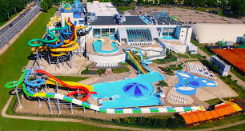

Livu Akvaparks
Livu Akvaparks is the largest indoor and outdoor water park in Northern Europe, in the Lielupe district of Jurmala, a five-minute drive from the central beach.

What's there
The indoor section has more than thirty water slides ranging from gentle children's tubes to drop slides over fifteen metres high, a large wave pool, several themed pools and a quiet pool with a swim-up bar. A sauna village with seven different saunas — Finnish, Russian, infrared, salt — sits at one end. The outdoor section opens in summer and adds large open-air pools, sunbathing decks and a children's play area.
Is it good for children?
Yes. The "Pirates' Bay" area is dedicated to small children and has shallow pools, gentle slides and supervised play. Older children gravitate to the larger slides; the height limits are clearly marked. A two-hour visit is enough for younger children; teenagers can easily fill a full day.
When to go
The park is the obvious rainy-day fallback when the beach is closed, so it gets busy in poor weather. On a sunny day in July the indoor section is much quieter, and you can have most of the slides to yourself. Weekday afternoons are quieter than weekends.
Practical information
- Address
- Viestura iela 24, Jurmala, LV-2011
- Phone
- +371 6775 5636
- Hours
- Mon–Thu 11:00–22:00 · Fri–Sun 10:00–23:00
- Tickets
- From €25 (4 hours, adult)
- Nearest station
- Lielupe (suburban train) + 10-minute walk